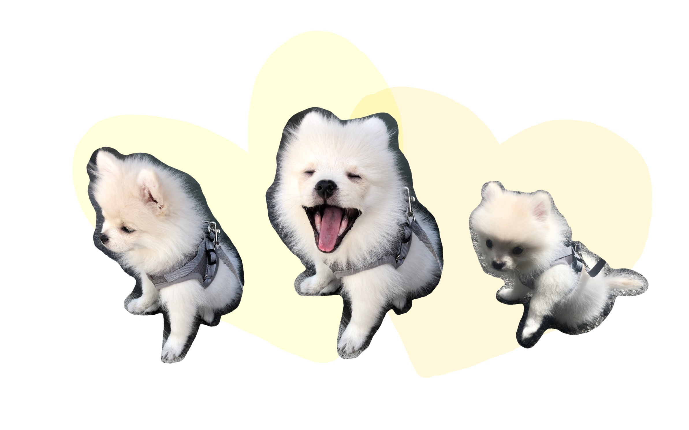
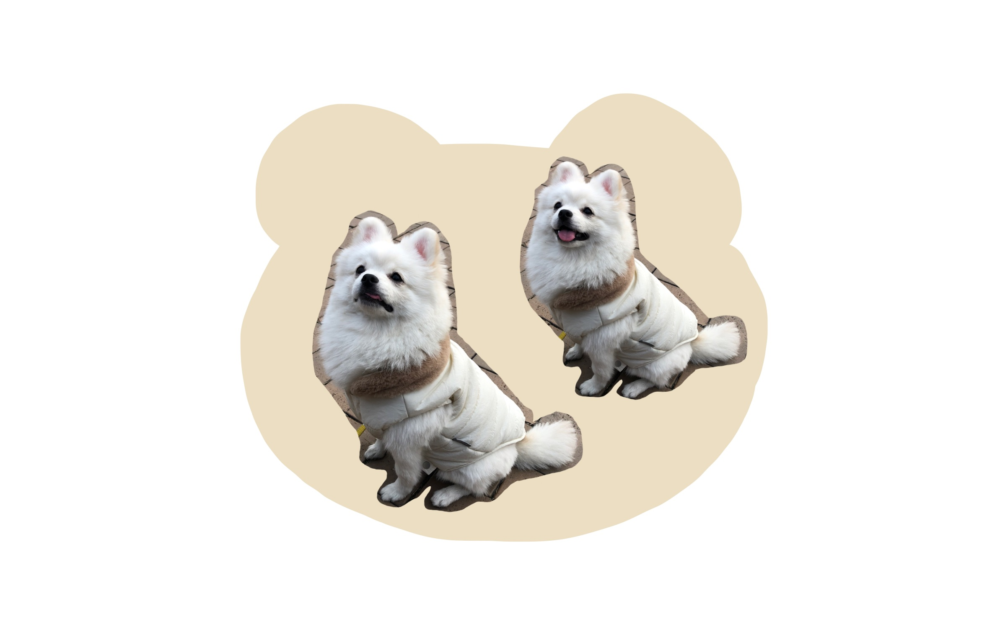
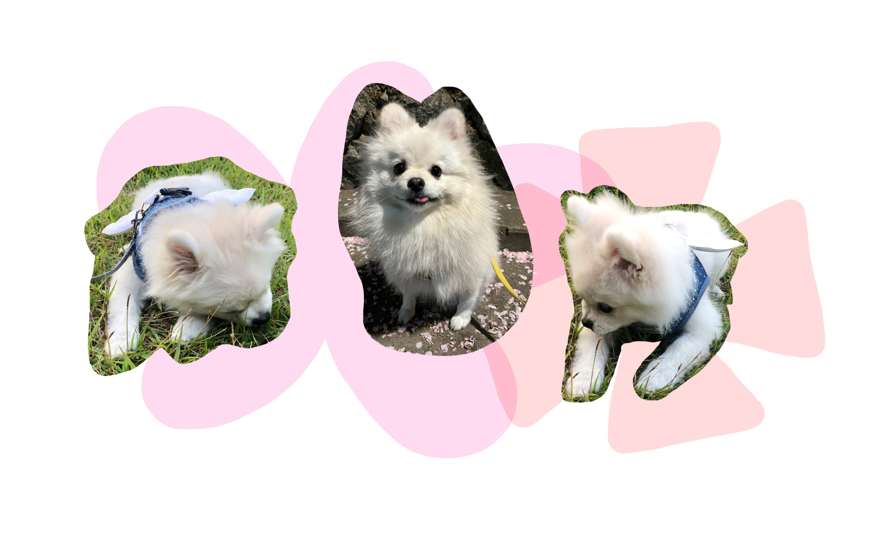
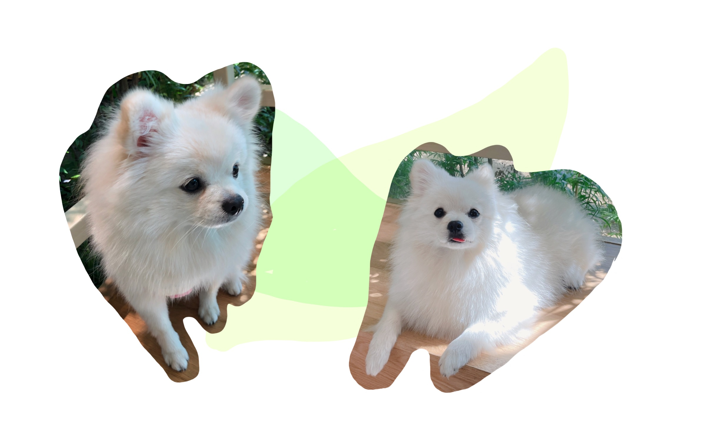
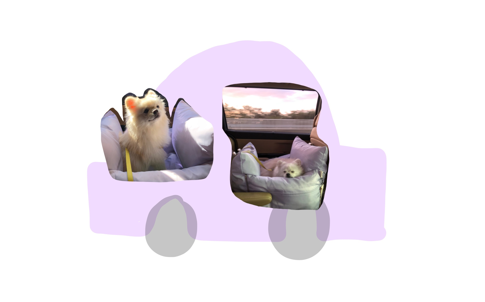
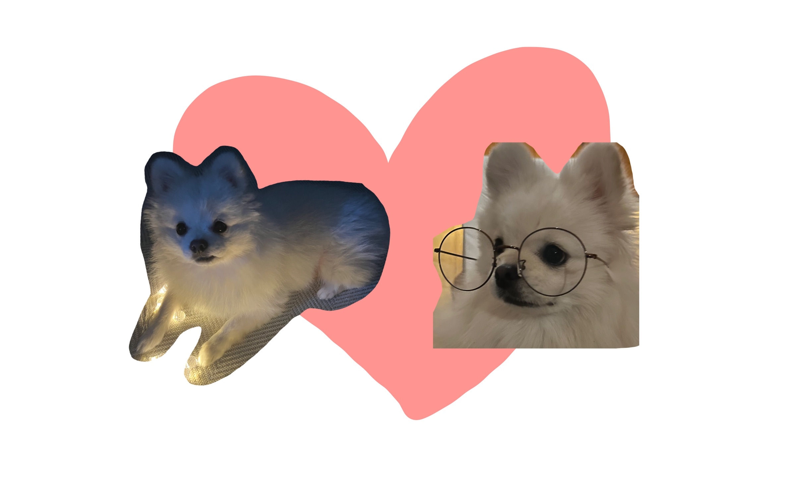
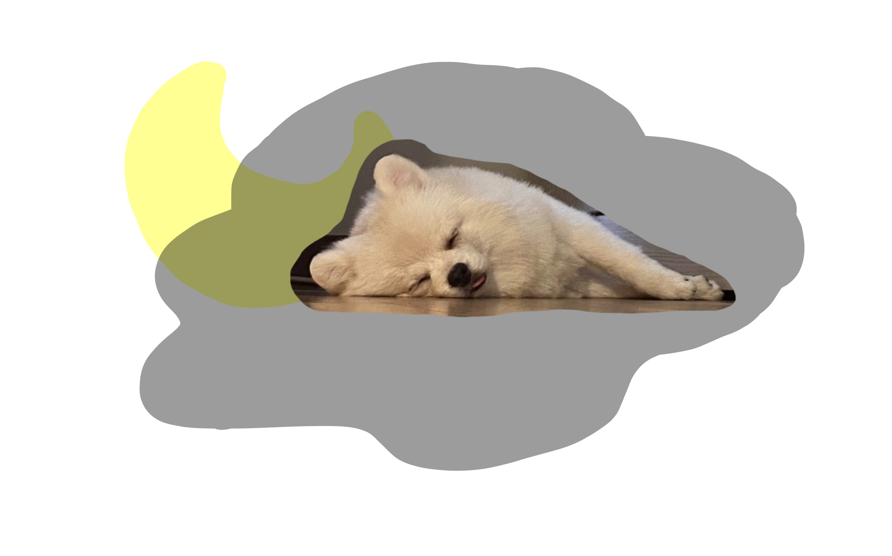

우리 집 막내 째로를 소개한다.
째로는 애기 때부터 치명적인 외모를 자랑했다.
강아지 주제에 곰같이 생겼다.
봄에도 싱그럽고,
여름에도 항상 활기차다.
아이보리 털이 더욱 빛나는 가을엔 더 귀엽다.
하지만 그래도 겨울에 참 어울리는 곰이다.
아빠가 시켜주는 드라이브는 째로의 낙이다.
어떤 모습이어도 아낀다. 내 새끼 ♥
늘 평안하고 행복하기를.